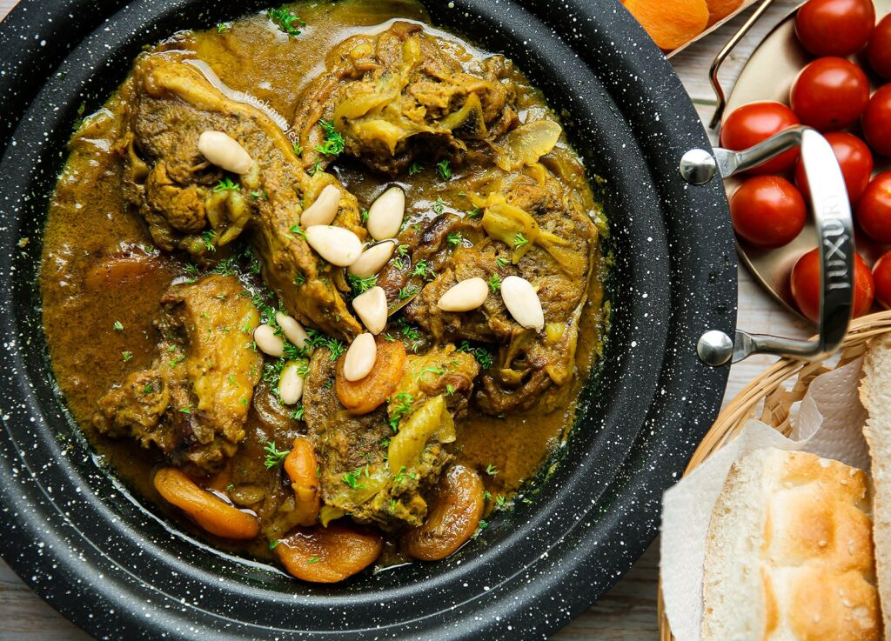

Op deze pagina laat ik zijn er verschillende recepten voor hoofdgerechten:
Bissara
Ingredienten
- 1600 ml water
- 500 g spliterwten
- 5 g Ras el Hanout
- 3 g komijn
- 2 g zwarte peper
- 10 g zout
- Olijfolie
Voorbereiding:
De eerste stap is om de erwten te wassen. Nadat je de erwten heb gewassen, dan breng je het water aan de kook. Als het begint te borrelen, dan voeg je de erwten toe, met het deksel op de pan. Als het weer begint te borrelen (ong. 5 minuten), dan doe je het vuur op het allerlaagst en laat je het ongeveer 35-40 minuten koken.
Nadat je dit hebt gedaan, dan laat je het eventjes afkoelen. Als het is afgekoeld dan voeg je de gekookte erwten in een blender, samen met de peper, zout, komijn en Ras el Hanout. Blend dit tot een geheel.
Voeg het mengsel dan terug in de pan om het verder te koken. Als het goed heet is dan kun je het serveren
Serveer het met olijfolie. Je kan er ook Marokkaans brood, ui of een pepertje bij serveren.
Kip kerrie broodjes
Ingredienten
- Turkse puntjes (hoeveelheid ligt aan de verdeling)
- 500 g kippendijen
- 10 g kerriepoeder
- 3 g zwarte peper
- 3 g knoflookpoeder
- 3 g gemberpoeder
- 25 g tomatenpuree
- 25 g verse korianer
- 20 ml olijfolie (voor de kipmarinade)
- 30 ml olijfolie (voor het bakken)
- 80 g (0f 1) gele ui
- 2 teentjes knoflook
- 100 ml water
- 1 blokje kippenbouillon
- 1 g trassi
Voorbereiding:
Je begint met het snijden van de ui e dan rasp je de knoflook. Hak dan de koriander fijn.
Snij de kippendijen in dunne reepjes, en voeg de kerriepoeder, zwarte peper, knoflookpoeder, gemberpoeder, tomatenpuree, koriander en olijfolie (20 ml) toe. Meng alles samen.
Verhit de olijfolie (30 ml) in een pan, en voeg de ui te. Bak dit voor een paar minuten. Voeg de knoflook, kip, kippenbouillon en trassi toe. Bak de kip tot het goudbruin is. Voeg erna dan het water toe en zet het vuuur wat lager. Bak de kip verder voor een paar minuten. Verdeel de kip dan over de Turkse puntjes. Je kan er ook zoetzure komkommer plakjes bij toevoegen. Serveer en geniet!
Lam tajine met abrikozen
Ingredienten
- 100 g gele ui
- 2 knoflooktenen
- 10 g verse peterselie
- 40 ml olijfolie
- 100 ml water
- 7 g kurkuma
- 4 g gemberpoeder
- 4 g gemberpoeder
- 3 g zwarte peper
- 8 g zout
- 775 g lamsvlees
- 40 g roomboter
- 40 ml olijfolie (voor extra)
- 1 sternanijs
- 2 laurierblaadjes
- 200g gele ui (voor extra)
- 150 ml water (voor extra)
- 150 g gedroogde abrikozen
- 10 g honing 
Voorbereiding:
Pel de gele ui (100 gram) en knoflook. Snijd de gele ui grof. Doe de ui, knoflook en peterselie in een hakmolen. Mix niet al te fijn. Snijd de andere twee uien in reepjes.
Doe het ui-mengsel in een diepe kom. Voeg de olijfolie, het water (100 ml), de kurkuma, gember, zwarte peper en het zout toe. Meng goed. Voeg het lamsvlees toe en laat het goed intrekken (het liefst een hele nacht).
Verhit de roomboter en olijfolie in een pan op middelhoog vuur. Voeg de steranijs en laurierblaadjes toe. Voeg de ui toe en leg het vleesmengsel erop. Voeg het overige water toe (150 ml toe). Kook de pan met inhoud op hoog vuur. Als het goed kookt, zet je het vuur laag. Kook verder voor 45 minuten. Voeg de gedroogde abrikozen en honing toe. Kook de pan afgedekt voor 30 minuten.
Verwijder de steranijs en laurierblaadjes. Serveer de tajine met vers brood en geniet!